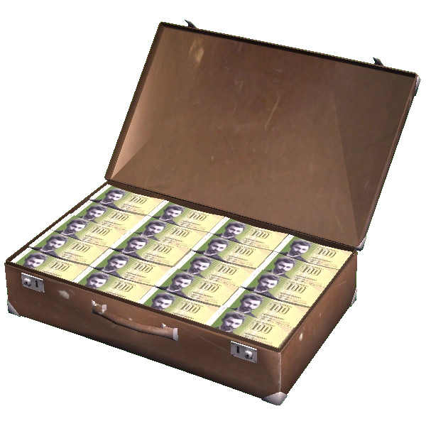
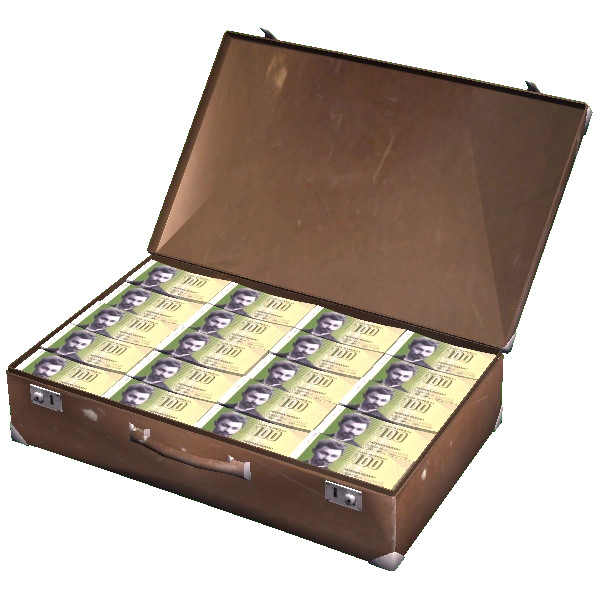

How to Get Money, the Smart Way
Do you need some more money for that upgrade you've been looking at? Need to get your car fixed? This guide will rate all of the income sources present in-game, so you can pick the one that suits you best.

Do you need some more money for that upgrade you've been looking at? Need to get your car fixed? This guide will rate all of the income sources present in-game, so you can pick the one that suits you best.
Jobs
Firewood Delivery
This method is perhaps the safest option out of all the others, and it also yields a nice profit - 3200mk if done right.
Park the trailer in the shed and start chopping logs. If you can't put logs on the chopping block anymore, make sure there's nothing else there, such as a bit of firewood that's sitting on it. Keep loading firewood into the trailer until the pile stops growing (or just count 81 logs chopped but it's much easier to just pay attention to the pile). Once it's loaded drive the tractor and trailer to the client's house (shown on the map, or just take two lefts and stop at the second house on the right). If someone is waiting for you there, then you can drop the firewood safely (if there's nobody there just go back home and make sure there's a dart on the house that you just went to; don't drop the wood, because there's nobody to pay you!).
You can lift the trailer by using the Rear Hydraulics switch while the hand throttle is on. To lower the trailer, just put the Rear Hydraulics switch back to its original position (while still having the hand throttle engaged).
Profit: 3200mk (minus the cost of diesel/fuel oil but that's cheap)
Home-brewed Beverages
Another low-risk, high-reward job that completes itself, allowing you to work on something else!
Start by taking the boat out to the cottage on the island. Once there, enter the sauna (room on the right) and pick up the bucket (while you're on the island you may also want to pick up the coffee cup and kettle). Once back home with the bucket, put it under the tap in the bathroom and let it fill up. Once it's filled, put in exactly 6 sugar packets and 1 yeast packet, then close the lid. You should now hear some bubbles once in a while. While waiting for the fermentation to finish (will take a few days), go to Teimo's and buy all the juice concentrate bottles you can find (you will need 20). Drink them when you get back home. Once the bubbling has stopped, remove the lid and fill up the bottles by holding them inside the bucket until you hear a "slosh" sound.
Now you have kilju, a Finnish homemade alcoholic drink popular in the 90s. Time to sell it. Load up the bottles in a vehicle and drive to the drunk's house (go the same way you would have gone while delivering firewood but this time stop at the third house (it's on the left)). If you can sell him kilju, he should be sitting at a table in the front yard. Drop a bottle on the table, and he will taste it. Depending on whether you've been following the correct recipe, he will comment on the kilju's quality. What you want to hear is "Very good sugar wine! I love this, strong as hell! I pay well for this.". Once he has said this, leave the rest of the bottles on the table and take the money that he's holding.
Profit: 3400mk - 259mk (cost of bottles) - 8.95mk (cost of yeast) - 41.7mk (cost of sugar) = 3090.35mk (fuel is not included as again, it's cheap).
Risks: death (crashing into your drunk cousin while driving)
Emptying Septic Tanks
This job doesn't pay as much, and is a little less safer, although the payout is nothing to scoff at.
Look at the map and note where you have to go to empty the septic tanks. Once there, park with your rear as close as possible to the manhole. Remove the lid, and click on the hose to drag it out. Once the hose is completely inside the well, go inside the cab of the tanker, turn on the hydraulic pumps (switch on the right) and engage the hand throttle (stick on the left of the dashboard) (you can tell that the pumping has started when you hear a lot of coughing and swearing). The more the hand throttle is pulled, the faster the tanker will work. Once done, the person near the well (usually sitting on a chair in front of their house) will offer you 1200mk. Make sure to take it. Do this with every other house that has a full tank (you can tell that the tank is full if someone is waiting in front of the house).
Once done, drive to the waste management plant in Peräjärvi (open between 8 and 16 on working days) and pay the worker there to open the gates (costs vary depending on how much sewage you have). After paying, drive the tanker's rear inside through the gates and open the valve at the rear. Wait there until the sewage stops, and then close the valve before leaving.
Profit: 1200mk * how many tanks you've emptied - 150mk (starting price for dumping sewage) - 0.14mk/litre (price of dumping one litre of sewage) - price of fuel (you'll be using a lot, the tanker isn't efficient)
Risks: death, the usual (falling into a septic tank)
Groceries for Grandma
Once in a while your grandmother, Sirkka, will call you and ask for you to buy her either fish or groceries (sausages, milk and sugar). Both methods will be explained here:
Fish Delivery
If she asks for fish, take the fishtrap (found at the cottage) and place it in the water near the island (you can also place it near your house but you will catch fish slower). Don't go too deep, or you won't be able to pick it up later. In the meantime make sure to buy some charcoal bags from Teimo. When you have five fish (will take a few days) pick up the trap and head back home without taking out the fish. Once home, fill up the grill with charcoal and light it up. Once the fire goes out (coal should now be glowing) take out a few fish (you can't fit all of them on the grill) and grill them. Make sure to take them off once they become grilled. When done, take the fish and go to grandma's (right at the intersection then first house on the left). While she's talking, place the fish in the blue box while tapping K to agree with her (gets you more money). Once she's done talking, she should give you some money.
Profit: 1000mk if you brought her 5 grilled fish - 18.5mk if you bought charcoal (or 0mk if you grilled it on the island wood grill) = either 1000mk or 991.5mk
Note: she can also be given 10 raw fish for the same amount of money, however you would have to carry around the fishtrap so the fish don't spoil.
Groceries
If she asks for groceries, start up a vehicle (van is not needed as what she asks for fits in one shopping bag) and drive to Teimo's. What you do from here depends on how quick you need grandma's money.
Approach #1: The quick way. To do this, buy all of Teimo's sugar, milk and sausages and drive back to grandma's. Open the bag and place the groceries inside the blue crate, like with the fish.
This approach gets you a profit of around 417mk (she hands out more, of course, but you already lost money while buying the stuff).
Approach #2: The VERY slow way. To do this, go to Teimo's and only buy all the milk. Come back next Thursday, when Teimo restocks, to buy all of his milk again. Do this until you have 50 milk bottles. Bring those to grandma for more profit.
This approach gets you a profit of 725mk.
Risks: death by drunk cousin
Advert Delivery
Teimo can ask you to deliver his adverts to every postbox you see, and the payout is proportional to how many flyers you drop off.
Try to drive in something with good fuel efficiency and (relatively) good safety, such as the Satsuma, Hayosiko or the moped. To drop off an advert, press F on the pile Teimo gives you, pick up the advert and place it in a mailbox (it will open and close automatically).
In total there are 27 mailboxes:
- Graveyard: 5 mailboxes
- Apartments: 7 mailboxes (the blank ones count too!)
- House near the school: 1 mailbox
- Teimo's house: 1 mailbox
- House SW of the radio tower: 1 mailbox
- Ventti shack near the lake: 1 mailbox
- Loppe: 4 mailboxes
- Jokke's house: 1 mailbox
- Firewood man's house: 1 mailbox
- Home: 1 mailbox (yours doesn't count!)
- Grandma's house: 1 mailbox
- Strawberry field: 2 mailboxes
Profit: 25mk * number of delivered advertisements = maximum of 675mk
Risks: death (running into your drunk cousin, you're guaranteed to see him since you'll be circling the map)
Risks: death (running into your drunk cousin, you're guaranteed to see him since you'll be circling the map)
Ventti
If you're feeling lucky (and know how to play blackjack really well), you can try visiting the lakeside shack at night. The rules are pretty simple: you are dealt two cards and then must "hit" (take cards) until you "stand". Once you "stand" the dealer will "hit" as well until he passes 21 (in this case he loses) or has a value higher than yours (in which case he wins). Of course, you also lose if you go higher than 21.
Stuff that's important to know: you can lose without even hitting a single card if you are unlucky (since you are dealt two cards you can go over 21 before even starting the game); to see the total value of your hand, hover over it.
Profit: varies depending on your luck and YOUR gambling skill. Maximum cash bet is around 4100mk, but the stakes go way higher.
Risks: maximum bet value only goes up if you win, so you can lose A LOT of money if you have really bad luck and don't understand the rules.
SPOILERS BELOW (full profits and risks)
Full profit, if you win the last bet: The keys to the house you've been betting in and to the wasp-infested Ruscko, parked inside the nearby shed.
Full risks, if you lose the last bet: You lose your house and the Satsuma: you can no longer enter the house and you can't start the car either.
Strawberries

Not worth it. You have to sit still while spamming F to fill up a strawberry box, then move on to the next bush. Oh, and hope that you don't accidentally clip your box through the ground and have it despawn. You didn't pay 15 euros to sit still and spam F to fill up some virtual berry box for 40 MARKS A BOX, did you?
Profit (you are actually considering this job?): 40 mk/box or up to 1320 mk on the entire field, now go look at something else
Risks: uncontrollable rage when realizing that you just wasted so much time on a berry bush for 40mk
Teimo's gambling corner
Slot machine
Empty your daily earnings in this wondrous machine and hit buttons written in a language you don't understand for the small chance of winning an equally small jackpot, even with a 5x multiplier.
Profit: depends. Jackpot is 250mk when using the 5x multiplier, but you'll never get there anyway.
Risks: Absolutely none! Side effects may include: death due to dehydration/starving/full bladder/heart attack/...
Videopoker
Need something to waste your money on while Teimo microwaves your food? Head over here and start losing your money by not even getting a good starting hand! In case you actually manage to get a hand and decide to double down, you can try to guess if the next card in the deck is higher or lower (than 7). In case you are wrong or get a 7, no money for you! In the rare case that you are correct, keep doubling down until you lose.
Profit: depends on how much money you want to lose before deciding that gambling is not a good income source.
Risks: same as slots.
And now, the highlight of this section...
Stealing Teimo's machines
Just attach a tow hook to one of Teimo's machines and drive off into the sunset with your random winnings. Once you have the illusion of safety, open the back of the machine with a screwdriver and take whatever sum of money was in there.